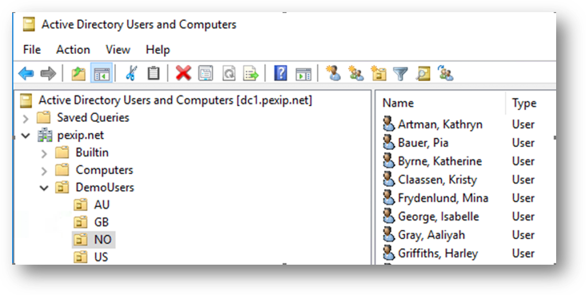

Use section #10 and section #9 of the lab sheet.
This LDAP integration can use a separate directory to that which is used for LDAP administrator authentication. You need to configure two things, an LDAP sync source and an LDAP sync template:
In addition, you can add further fields from the LDAP database that can be used in the LDAP template beyond those defined out of the box (although this is not something you will do in this exercise).
Refer to https://docs.pexip.com/admin/vmr_syncing.htm and https://docs.pexip.com/admin/sync_patterns.htm. In addition, LDAP syntax can be quirky, so referring to our LDAP troubleshooting guide can be a lifesaver (see https://docs.pexip.com/admin/integrate_ldap_troubleshooting.htm).
In the image below, you can see and the “Active Directory Users and Computers” window for the pexip.net domain. In this LDAP server there are employees in 4 countries, under pexip.net --> DemoUsers there are the Organisation Units (OUs) AU, GB, NO and US.

[showing some users in NO]
You will need to create an LDAP sync template using the above source to create VMRs for the users in Norway, then later users in other countries.
The users in Norway are in the LDAP path: OU=NO,OU=DemoUsers,DC=pexip,DC=net
The latter part of this DN should already be in the sync source as the Base DN and is therefore not needed in a relative path.
LDAP databases/Active Directory in an ideal world should be clean and tidy with the same data formats used for the same fields. Unfortunately, this is rarely the case. It is therefore in your interests to do an initial LDAP sync without specifying fields to create any VMR aliases. Instead, you can use other fields in the sync template (often the “VMR Name” and “VMR Description” field) to temporarily collect the LDAP data, then see what could be used to construct valid aliases.
Once you have constructed and saved the initial template (without anything specified in the VMR alias fields), return to the template and click the “Sync Now” button.
Have a look at Services --> Virtual Meeting Rooms to see if any information has been imported. You should see that no VMRs have aliases, however, the VMR name and description field contains the information extracted from AD, and perhaps you can use some of these LDAP fields to create the required VMR aliases.
To filter, clean and alter the LDAP data, refer to the documentation linked previously.
For this exercise, we want to construct two aliases for each users VMR:
When examining the LDAP data in the VMR name and description fields, you may notice that the users have email addresses, although these use the domain portion @pexip.net.
For the numeric alias, the prefix for Norwegian users should be 947. You may notice several possible LDAP fields with useful data, such as the employeeID or telephoneNumber.
A Norwegian user should eventually have a VMR with two aliases:
Now add similar Sync Templates for Australia, Great Britain and the United States. Users in each country should have the following prefixes: